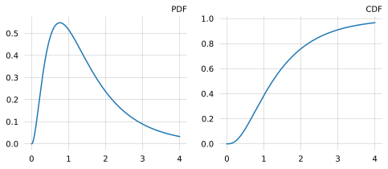
Phase-type distribution graphs for population genetics
Kasper Munch
BiRC, Department of Molecular Biology and Genetics, Aarhus University
Micro-sabbatical
Other Research…
Three connected topics
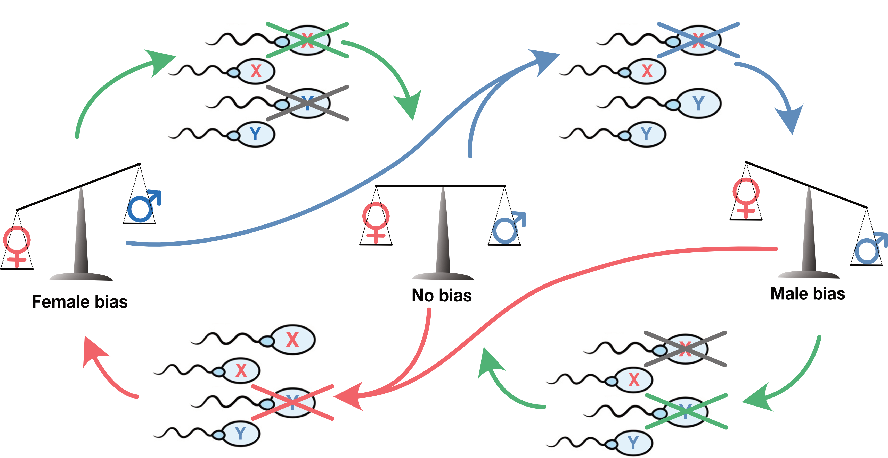
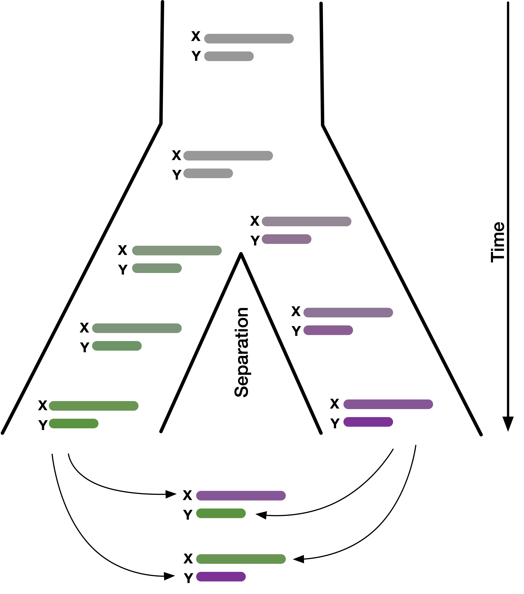
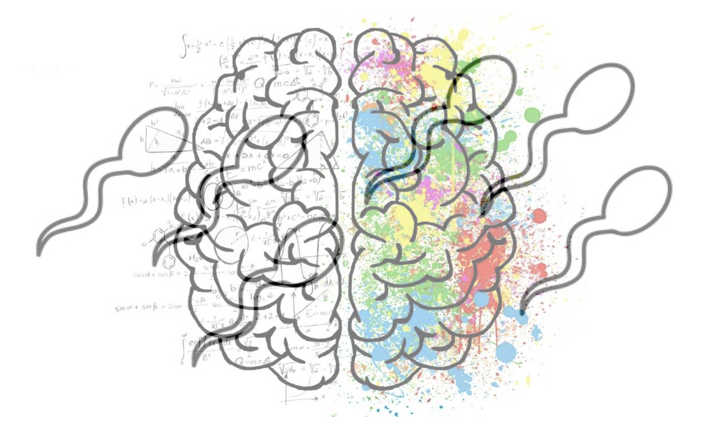
Baboons
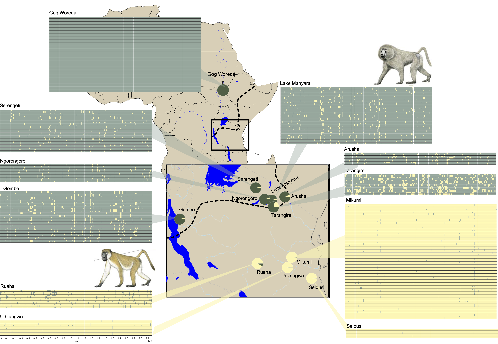
chrX and genomic “swampings”
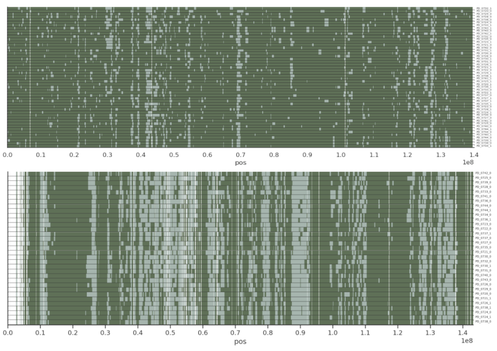
Spermatogenesis scRNA
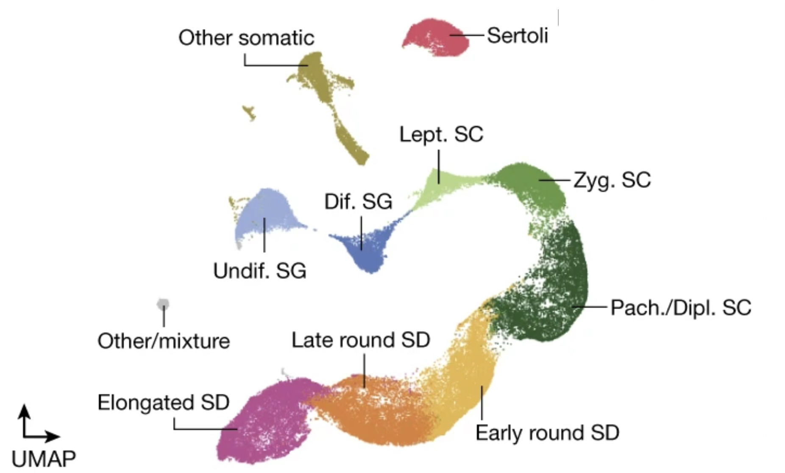
Mikkel Schierup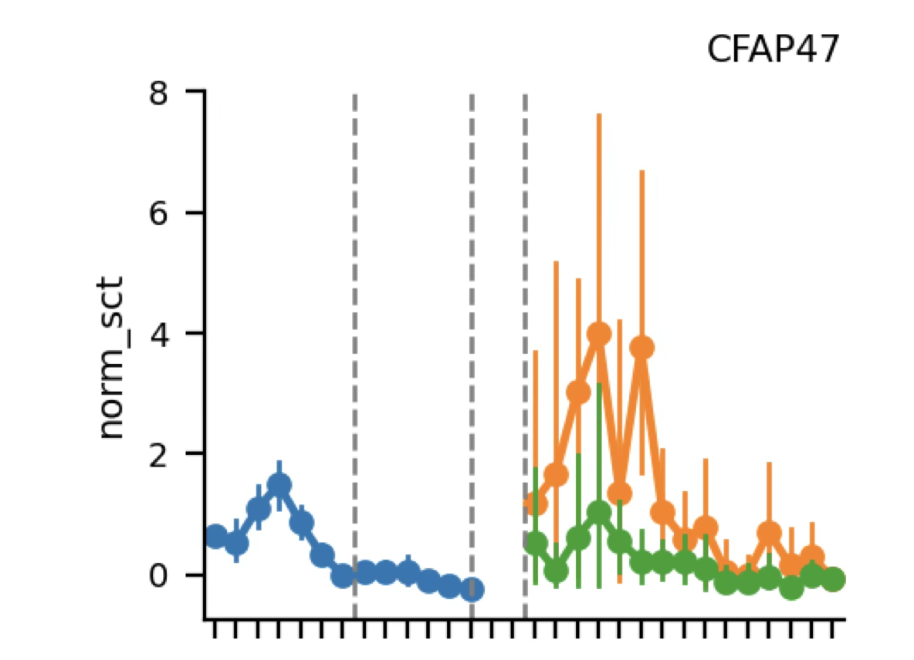
Meritxell Riera BellesSperm chromatin compartments
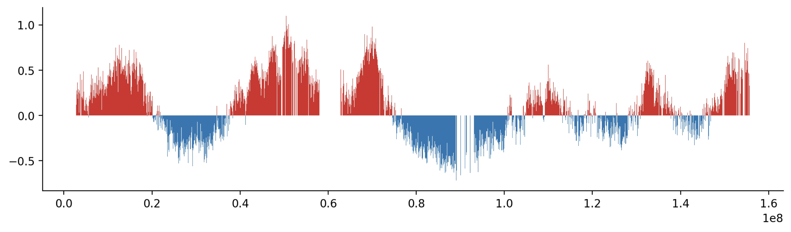
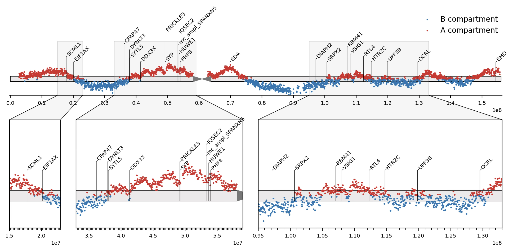
Large Danish Autism cohorts
Three way overlap
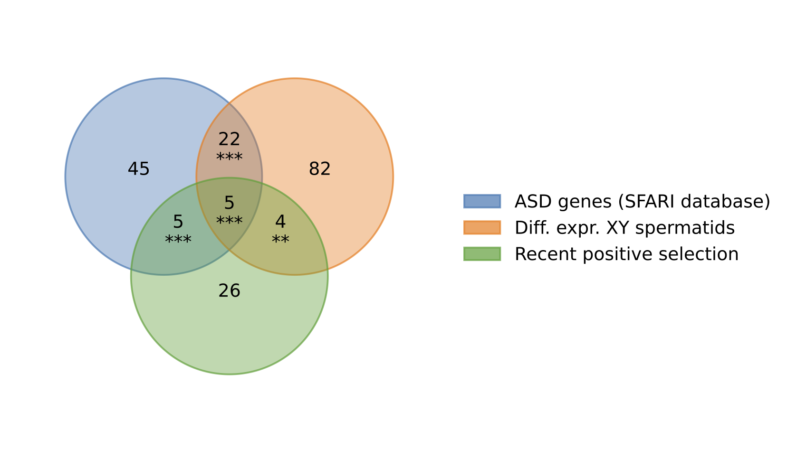
(CDKL5, CLCN4, HUWE1, IL1RAPL1, PTCHD1)Menu
Why?
- Motivations:
- Exploration of statistical properties.
- Can we do with less data if you model more of its properties?
- What can be computed given enough time and money? And can we share such precomputed models?
- How far can we take inference on unphased data?
- Bayesian inference with true posterior.
What?
- Represents phase-type distributions as graphs.
- Exact:
- Takes phase-type distributions from theory to practice.
- Continuous and discrete
- Moments and PMFs
- Sojourn times.
- Joint probability distribution over discrete events
- Arb. approx.:
- State probabilities at time t.
- Time inhomogeneous models:
- Joint probabilities at time t.
- Moment matched distributions
- (full PDF)
- Inference:
- SVGD
- Method of moments
- MCMC
API
from phasic import Graph
def coalescent(state):
transitions = []
for i in range(state.size):
for j in range(i, state.size):
same = int(i == j)
if same and state[i] < 2:
continue
if not same and (state[i] < 1 or state[j] < 1):
continue
new = state.copy()
new[i] -= 1
new[j] -= 1
new[i+j+1] += 1
rate = state[i]*(state[j]-same)/(1+same)
transitions.append((new, rate))
return transitions
nr_samples = 4
initial_state = [nr_samples]+[0]*(nr_samples-1)
graph = Graph(coalescent, ipv=initial_state)
graph.moments(10)Docs
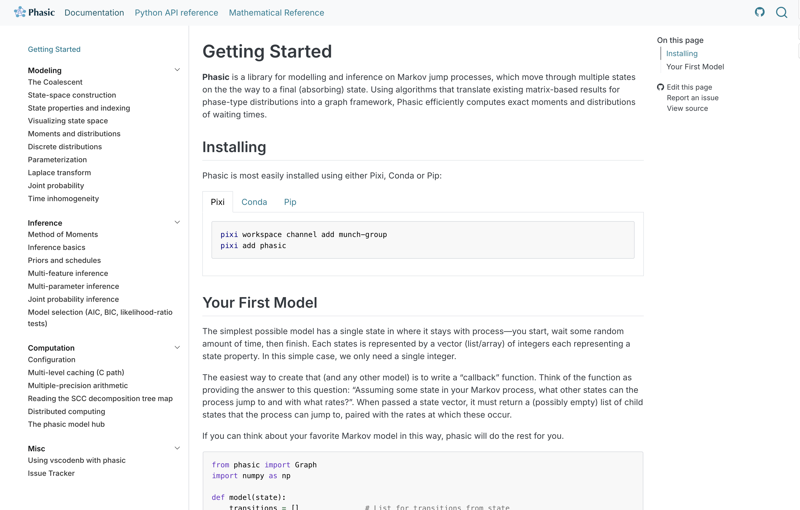
Phase-type distributions
Phase-type distributions
- “Distribution of time to absorption of a discrete space Markov jump process.”
- Lots of other applications
- “What is the distribution of time water molecules spend in each tank of a sewage treatment plant?”
- “How likely are all packets of data to reach a server in less than some time?”
- “How much time do lineages of a coalescent or ARG spend spend in different states?”
The coalescent is a Markov jump process
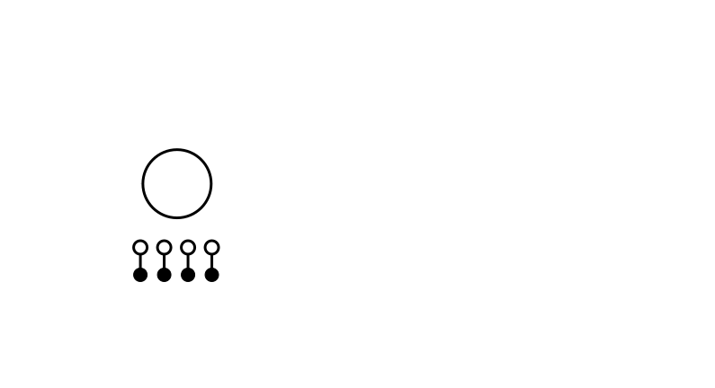
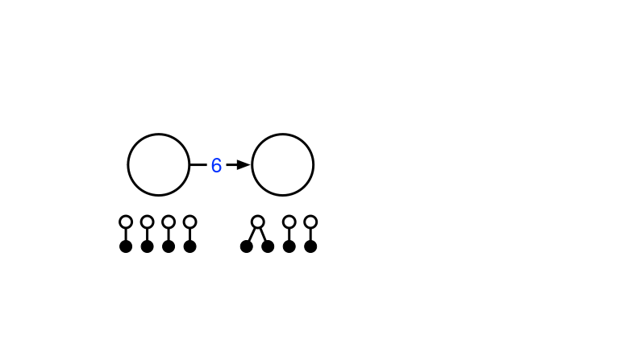
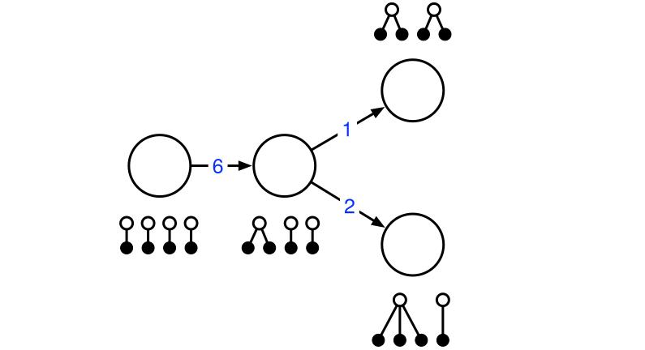
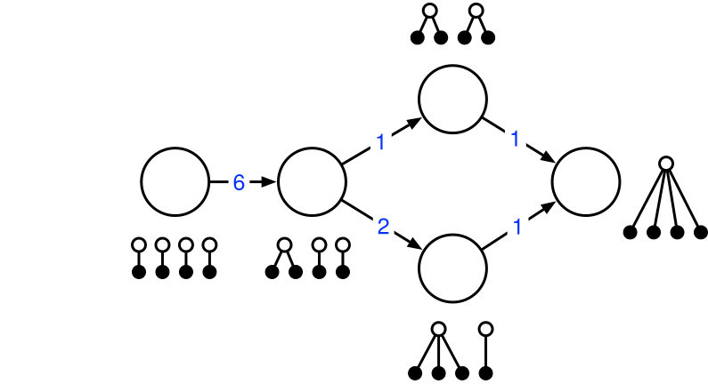
The coalescent is a Markov jump process
\(\boldsymbol{Q} = \begin{bmatrix} {\color{blue}-6} & {\color{blue}6} & & & 0 \\ & {\color{blue}-3} & {\color{blue}1} & {\color{blue}2} & 0 \\ & & {\color{blue}-1} & & 1 \\ & & & {\color{blue}-1} & 1 \\ 0 & 0 & 0 & 0 & 0 \end{bmatrix}\)
The coalescent is a Markov jump process
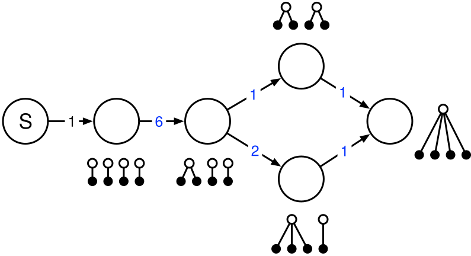
\(\boldsymbol{Q} = \begin{bmatrix} {\color{blue}-6} & {\color{blue}6} & & & 0 \\ & {\color{blue}-3} & {\color{blue}1} & {\color{blue}2} & 0 \\ & & {\color{blue}-1} & & 1 \\ & & & {\color{blue}-1} & 1 \\ 0 & 0 & 0 & 0 & 0 \end{bmatrix}\)
\({\color{blue}\boldsymbol{S}} = \begin{bmatrix} -6 & 6 & & \\ & -3 & 1 & 2 \\ & & -1 & \\ & & & -1 \\ \end{bmatrix}\)
\(\boldsymbol{\alpha} = (1,\; 0, \; 0, \; 0)\)
Waiting time in the coalescent is
phase-type distributed
\(\tau \sim \mathrm{PH}(\boldsymbol{\alpha}, {\color{blue} \boldsymbol{S}})\)
\(\boldsymbol{\alpha} = (1,\; 0, \; 0, \; 0)\)
\({\color{blue}\boldsymbol{S}} = \begin{bmatrix} -6 & 6 & & \\ & -3 & 1 & 2 \\ & & -1 & \\ & & & -1 \\ \end{bmatrix}\)
\(\mathbb{E}[\tau] = \boldsymbol{\alpha} \boldsymbol{U} \mathbf{e} \; \; \; \; \; \; \; \; \boldsymbol{U} = -\boldsymbol{\color{blue}S}^{-1}\)
Expectation of a phase-type distribution
\[ \begin{align*} \mathbb{E}[\tau] &= \boldsymbol{\alpha} \boldsymbol{U} \mathbf{e} \\ &= \begin{bmatrix} \alpha_{1} & \alpha_{2} & \alpha_{3} & \alpha_{4} \\ \end{bmatrix} \times \begin{bmatrix} u_{11} & u_{12} & u_{13} & u_{14} \\ u_{21} & u_{22} & u_{23} & u_{24} \\ u_{31} & u_{32} & u_{33} & u_{34} \\ u_{41} & u_{42} & u_{43} & u_{44} \end{bmatrix} \times \begin{bmatrix} \, 1 \, \\ 1 \\ 1 \\ 1 \end{bmatrix} \\[0.5em] &= \begin{bmatrix} \alpha_{1} & \alpha_{2} & \alpha_{3} & \alpha_{4} \\ \end{bmatrix} \times \begin{bmatrix} u_{1*} \\ u_{2*} \\ u_{3*} \\ u_{4*} \end{bmatrix} \end{align*} \]
MGF, CDF, PDF
\[\mathbb{E}[\tau^k] = k! \boldsymbol{\alpha} \boldsymbol{U}^k \mathbf{e}\]
\[F(t) = 1 - \boldsymbol{\alpha} e^{\boldsymbol{S}t} \mathbf{e}, \quad t \geq 0\]
\[f(t) = \boldsymbol{\alpha} e^{\boldsymbol{S}t} (-\boldsymbol{S}) \mathbf{e}, \quad t \geq 0\]
Laplace Transform
\[ \mathbb{E}[e^{-s\tau}] = \boldsymbol{\alpha}(s\boldsymbol{I} - \boldsymbol{S})^{-1}\mathbf{t} \]
Phase-type distribution with rewards
\(\tau \sim \mathrm{PH}(\boldsymbol{\alpha}, {\color{blue} \boldsymbol{S}}, {\color{red} \boldsymbol{r}})\)
\(\boldsymbol{\alpha} = (1,\; 0, \; 0, \; 0)\)
\({\color{blue}\boldsymbol{S}} = \begin{bmatrix} -6 & 6 & & \\ & -3 & 1 & 2 \\ & & -1 & \\ & & & -1 \\ \end{bmatrix}\)
\({\color{red} \boldsymbol{r}} = (4,\ 3,\ 2,\ 2)\)
\(\mathbb{E}[\tau]=\boldsymbol{\alpha} \boldsymbol{U}\triangle({\color{black}\boldsymbol{{\color{red}r}}})\mathbf{e}\)
\(\mathbb{E}[\tau^k]=k!\boldsymbol{\alpha} (\boldsymbol{U}\triangle({\color{black}\boldsymbol{{\color{red}r}}}))^{k}\mathbf{e}\)
But why?
Phase-type distribution with rewards
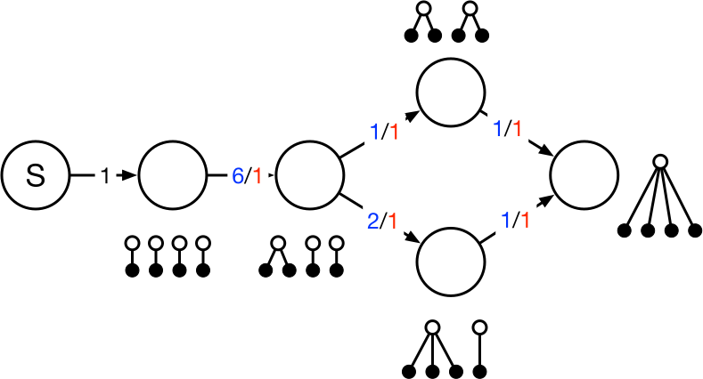
TMRCA (tree height):
\({\color{red} \boldsymbol{r}} = (1,\ 1,\ 1,\ 1)\)
\(\mathbb{E}[\tau] = \boldsymbol{\alpha} \boldsymbol{U}\!\, \triangle \! \,({\color{red}\boldsymbol{r}})\, \mathbf{e}\)
Total branch length:
\({\color{red} \boldsymbol{r}} = (4,\ 3,\ 2,\ 2)\)
\(\mathbb{E}[\tau] = \boldsymbol{\alpha} \boldsymbol{U}\!\, \triangle \! \,({\color{red}\boldsymbol{r}})\, \mathbf{e}\)
Multivariate Phase-Type Distributions
Multivariate phase-type distributions assign a vector of rewards to each state, resulting in a vector-valued outcome:
\[ \boldsymbol{Y} \sim MPH^*(\boldsymbol{\alpha}, \boldsymbol{S}, \boldsymbol{R}) \]
where \(\boldsymbol{R}\) is a matrix of rewards (each row corresponds to a state, each column to a reward dimension).
Cross moments
The covariance between marginal reward dimensions \(i\) and \(j\):
\[ \begin{align*} \text{Cov}(Y_i, Y_j) =& \boldsymbol{\alpha}\boldsymbol{U}(\boldsymbol{R}_{\cdot i})\boldsymbol{U}(\boldsymbol{R}_{\cdot j})\mathbf{e} \\ &+ \boldsymbol{\alpha}\boldsymbol{U}(\boldsymbol{R}_{\cdot j})\boldsymbol{U}(\boldsymbol{R}_{\cdot i})\mathbf{e} \\ &- \boldsymbol{\alpha}\boldsymbol{U}(\boldsymbol{R}_{\cdot i})\mathbf{e} \cdot \boldsymbol{\alpha}\boldsymbol{U}(\boldsymbol{R}_{\cdot j})\mathbf{e} \end{align*} \]
Graph Representation
Matrix formulation
Analytically tractable 😀
\(F_\tau(t) = 1 - \boldsymbol{\alpha}{\color{magenta}e^{\boldsymbol{S}t}}\mathbf{e}, \;\; t\geq 0\)
\(\mathbb{E}[\tau^k]=k!\boldsymbol{\alpha} ({\color{magenta}\boldsymbol{U}}\triangle({\color{black}\boldsymbol{r}}))^{k}\mathbf{e}\)
Scale poorly 😱
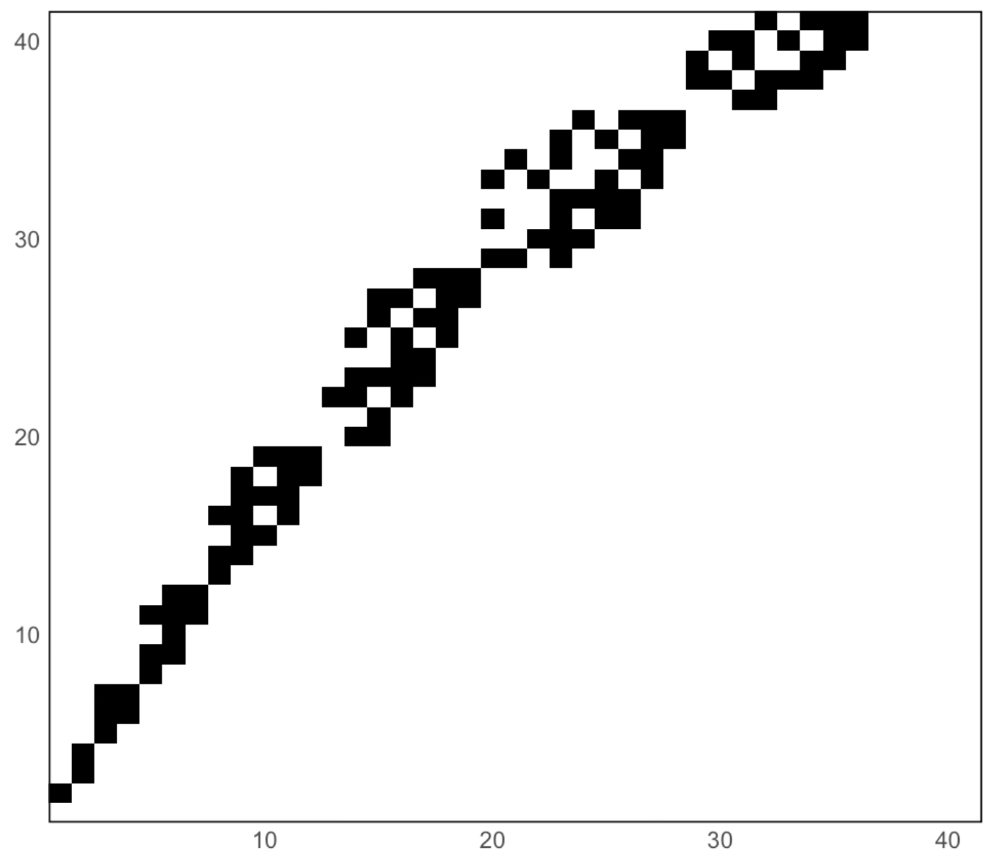
(Coalescent n=10)
Graph formulation
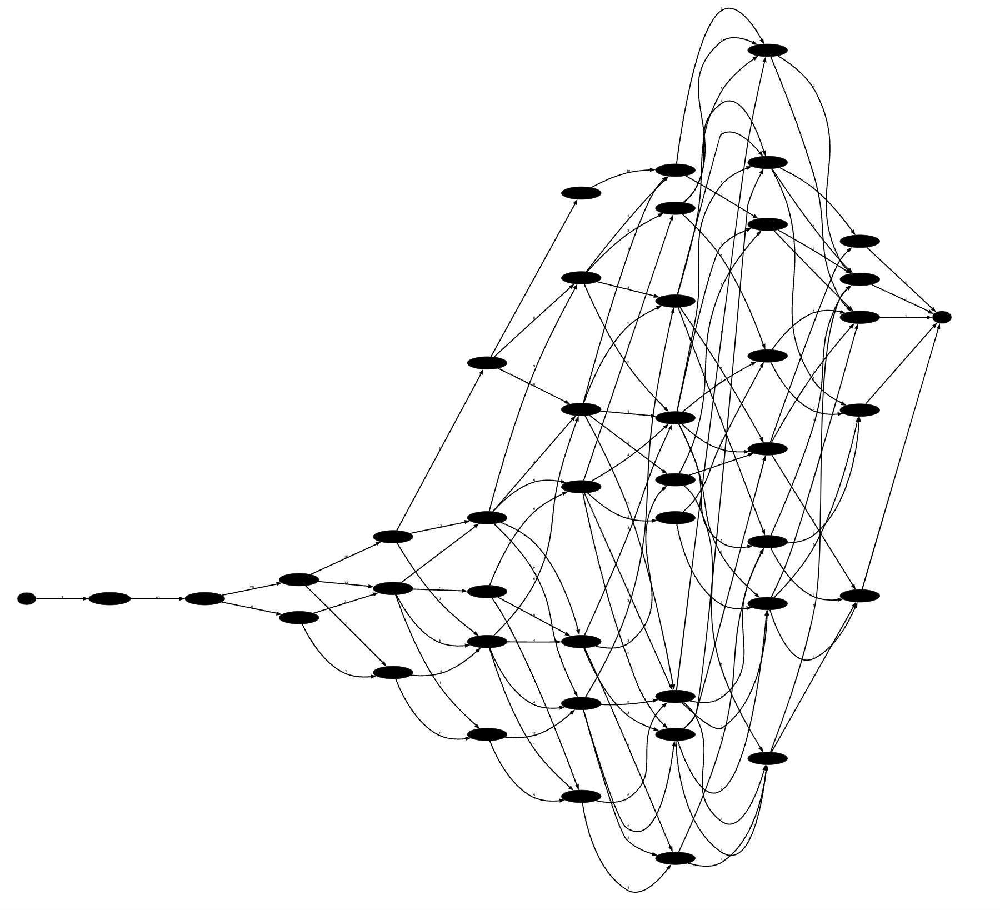
Analytically tractable 😀
- As graph algorithms:
- Elimination
- Exponentiation
- Allows:
- Decomposition
- Parallelization
- Parametrization
- Caching
- Sharing
- Inference
Scale 😀
(Coalescent n=10)
Graph computation stages
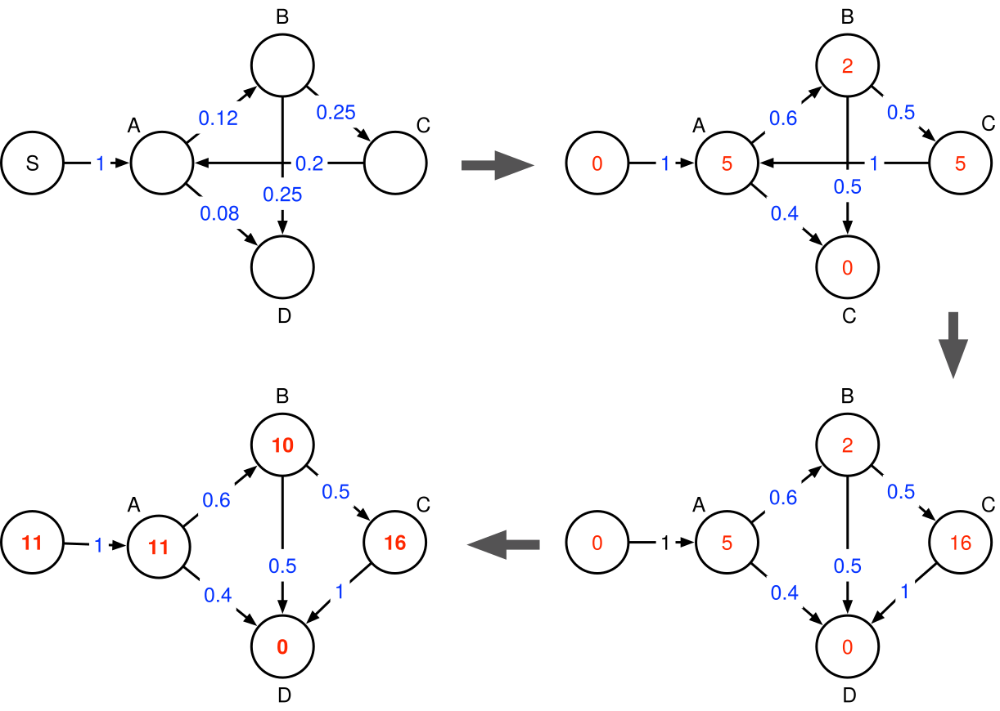
Standardization
Elimination
Moments
Symbolic Gaussian elimination (Mem/Disk cached)
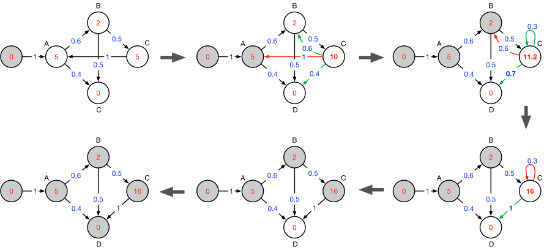
Constructing an acyclic graph
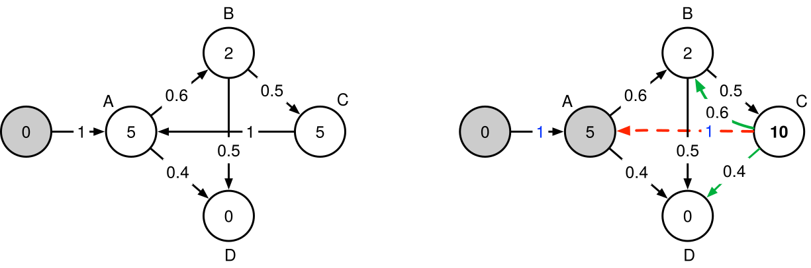
Edges:
\(w(\mathrm{C}\rightarrow \mathrm{D}) = w(\mathrm{C}\rightarrow \mathrm{A})\, w(\mathrm{A}\rightarrow \mathrm{D})\)
Vertices:
\(x_A \leftarrow x_C + x_A\)
Insert the first equation in the third:
\(\begin{align*} T_C &= 5 + (5 + 0.6 \cdot T_B + 0.4 \cdot T_D) \\ &= 10 + 0.6 \cdot T_B + 0.4 \cdot T_D \end{align*}\)
Constructing an acyclic graph
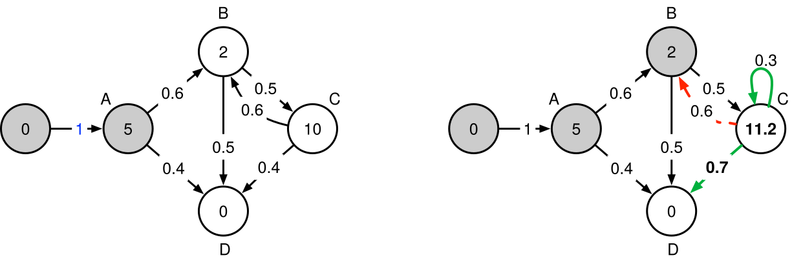
\(x_\mathrm{C} +\!\,= x_\mathrm{A}\, w(\mathrm{C}\rightarrow \mathrm{A})\)
\(x_C \leftarrow 0.6 \cdot x_C\)
Insert the second equation in the third:
\(\begin{align*} T_C &= 5 + T_A + 0.6 \cdot ( T_B + 0.5 \cdot T_C + 0.5 \cdot T_D) \\ &= 11.2 + 0.3 \cdot T_C + 0.7 \cdot T_D \end{align*}\)
Constructing an acyclic graph
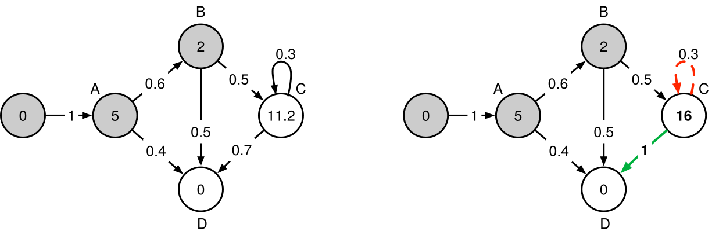
\(x_C \leftarrow x_C + x_C \cdot \big(\frac{1}{1-0.6}-1\big)\)
Isolate \(T_C\) in the third equation to remove self-loop:
\(\begin{align*} T_C &= 11.2 + 0.3 \cdot T_C + 0.7 \cdot T_C \\ &= 16 + T_D \end{align*}\)
Constructing an acyclic graph
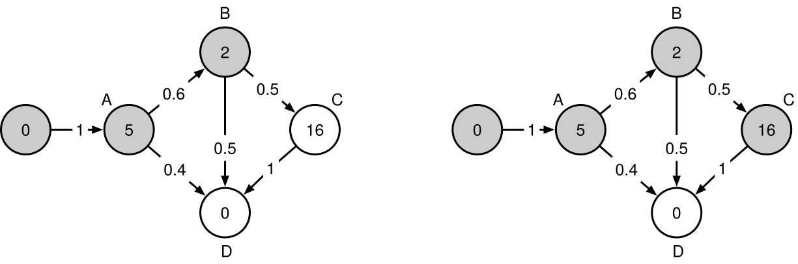
Constructing an acyclic graph
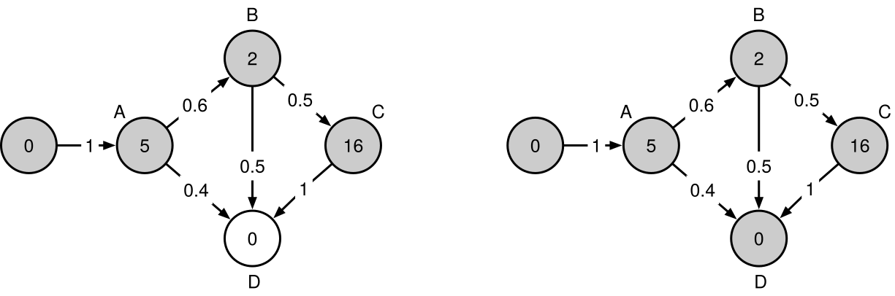
Computing expectation
Compute expectation by recursion in reverse topological order:
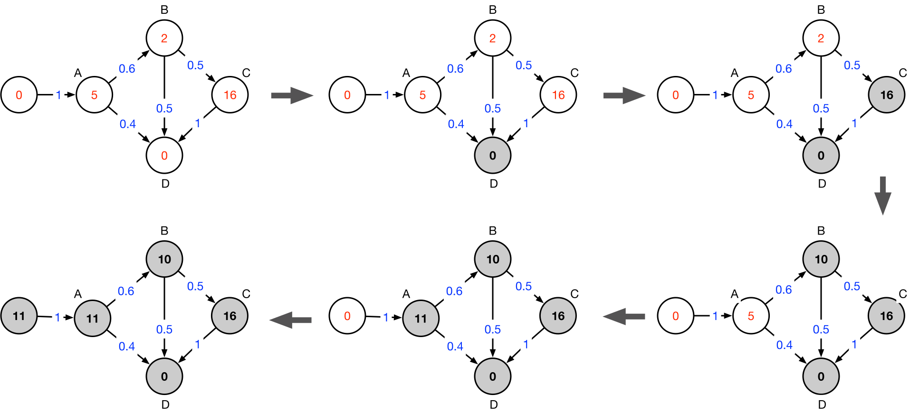
Expected waiting times
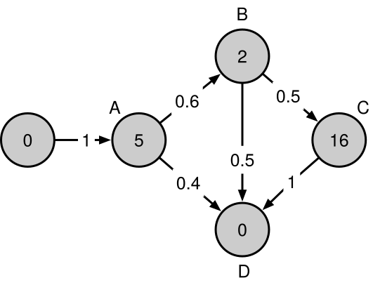
(11, 10, 16) are the row sums of the Green matrix. I.e. the expected waiting times starting at each vertex.
graph.expected_waiting_time()
→ [11, 11, 10, 16]
Singleton branch length using reward transformation
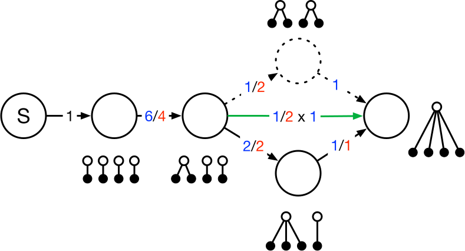
Null rewarded node is removed and edge is created or updated:
\(w(u \rightarrow z) = w(u \rightarrow v) \frac{w(v \rightarrow z)}{\sum_{x \in x } w(v \rightarrow x)}\)
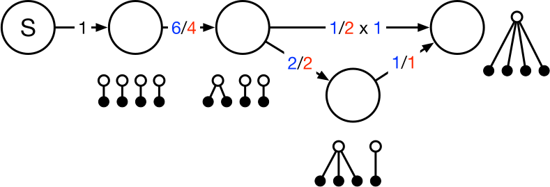
Doubleton branch length using reward transformation
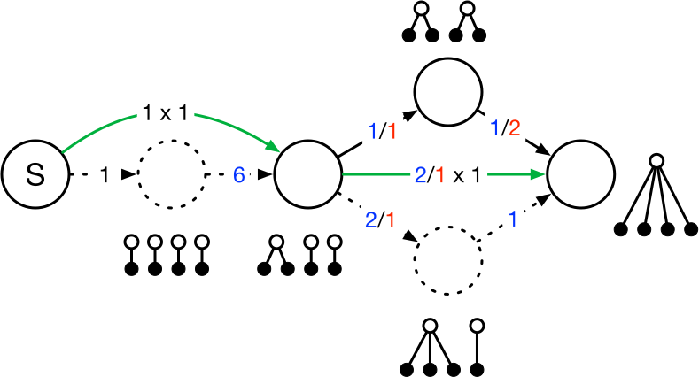
Marginal moments (SFS)
- Reward states by:
- nr. of singleton branches
- nr. of doubleton branches
- etc.
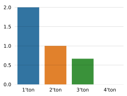
Daisy chaining moment computation
k’th moment: \(\mathbb{E}[\tau^k]=k!\boldsymbol{\alpha} (\boldsymbol{U}\triangle(\boldsymbol{r}))^{k}\mathbf{e}\). Assume unit rewards for simplicity.
First moment:
\[ \mathbb{E}[\tau] = \boldsymbol{\alpha} \boldsymbol{U}\triangle(\boldsymbol{r})\mathbf{e} \]
Second moment:
\[ \mathbb{E}[\tau^2] = 2\cdot\boldsymbol{\alpha} \boldsymbol{U}\triangle(\boldsymbol{r})\boldsymbol{U}\triangle(\boldsymbol{r})\mathbf{e} = 2\cdot\boldsymbol{\alpha} \boldsymbol{U}\!\triangle\!\,(\boldsymbol{r'}) \mathbf{e} \]
where
\[ \triangle\!\,(\boldsymbol{r'}) \mathbf{e} = \boldsymbol{r'} =\boldsymbol{U}\mathbf{e} \]
where \(\boldsymbol{r'}\) are the waiting times (Green’s matrix row sums) computed for the first moment.
Higher-order moments
graph.expected_waiting_time()
→ [1.5, 1.5, 1.33, 1, 1, 0]
\(\mathbb{E}[\tau] = 1.5\)
graph.expected_waiting_time(graph.expected_waiting_time())
→ [1.69, 1.69, 1.44, 1, 1, 0]
\(\mathbb{E}[\tau^2] = 2 * 1.69\)
Discrete phase-type distributions
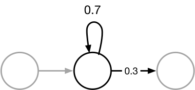
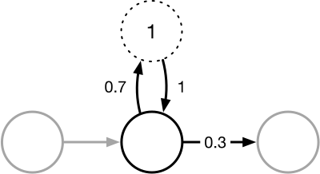
Discrete Phase-Type Distributions
4 sample coalescent:

Laplace Transform
\[ \mathbb{E}[e^{-s\tau}] = \boldsymbol{\alpha}(s\boldsymbol{I} - \boldsymbol{S})^{-1}\mathbf{t} \]
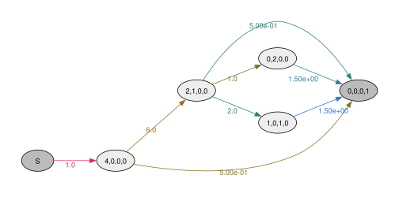
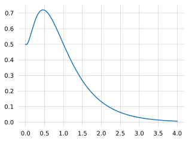
Joint probability of discrete events
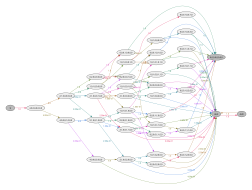
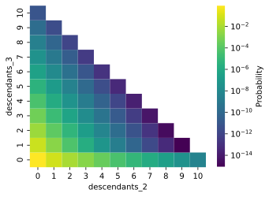
:::::
Time-inhomogeneous models with phase-type distributions
van Loan trick
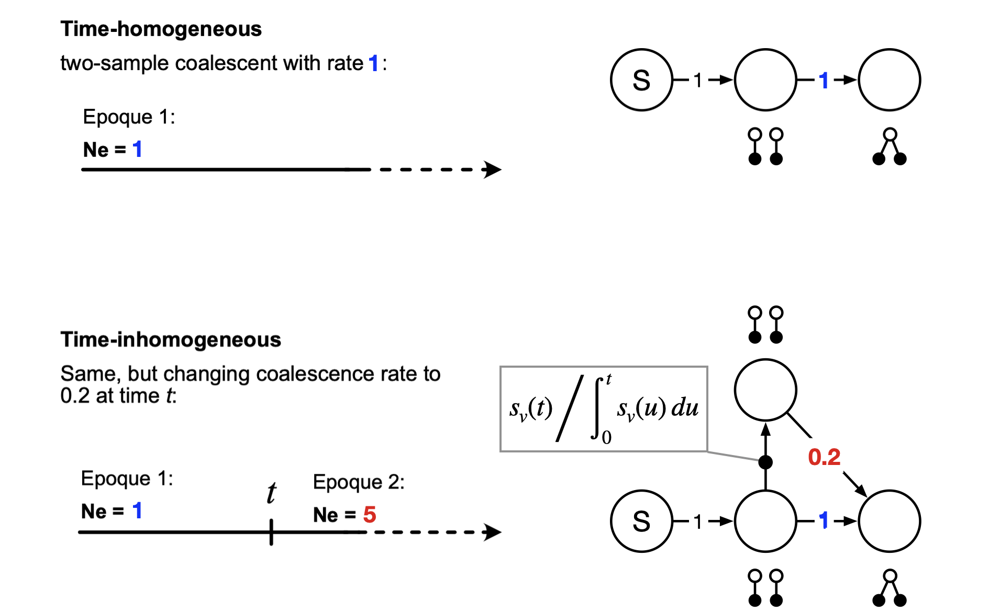
Time homogeneous joint probability
4 sample coalescent. Continuous model:

Time homogeneous joint probability
4 sample coalescent. Continuous model:

Time inhomogeneous joint probability
Daisy-chaining \(n\) epochs:
\((n-1)\)
\(\times\)
\(1\)